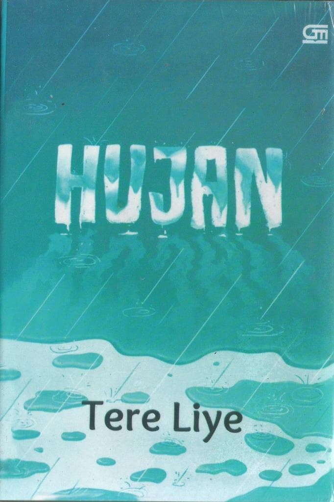

Hujan
By Tere Liye
4.5/5
Hujan
By Tere Liye
4.5/5
Seorang gadis bernama Lail melakukan terapi untuk menghilangkan ingatan miliknya. Elijah, sang terapis bertanya pada Lail tentang ingatan apa yang ingin dia hapus. Lail menjawab bahwa ia ingin melupakan Hujan - karena hujanlah yang akan memulai kisah panjang tentang Lail, apa yang dialaminya dan apa yang ingin dilupakannya. Tentang persahabatan
Tentang cinta
Tentang perpisahan
Tentang melupakan
Tentang hujan
Tentang cinta
Tentang perpisahan
Tentang melupakan
Tentang hujan

Handmaid's Tale
By Margareth Atwood
4.15/5
The story is told in first-person narration by a woman named Offred. In this era of environmental pollution and radiation, she is one of few fertile women remaining. Therefore, she is forcibly assigned to produce children for the "Commanders", the ruling class of men, and is known as a "Handmaid" based on the biblical story of Rachel and her handmaid Bilhah. Apart from Handmaids, other women are also classed socially and follow a strict dress code, ranked highest to lowest: the Commanders' Wives in blue; the Handmaids in red with white veils around their faces; the Aunts (who train and indoctrinate the Handmaids) in brown; the Marthas (cooks and maids) in green; Econowives (the wives of lower-ranking men who handle everything in the domestic sphere) in blue, red and green stripes; young, unmarried girls in white; and widows in black.)